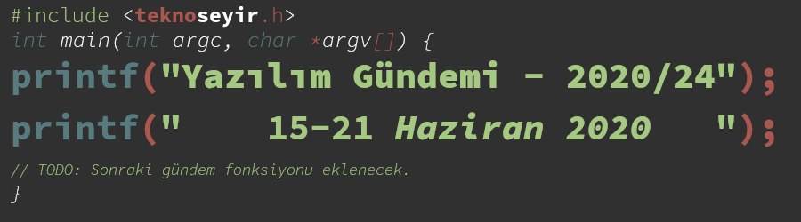
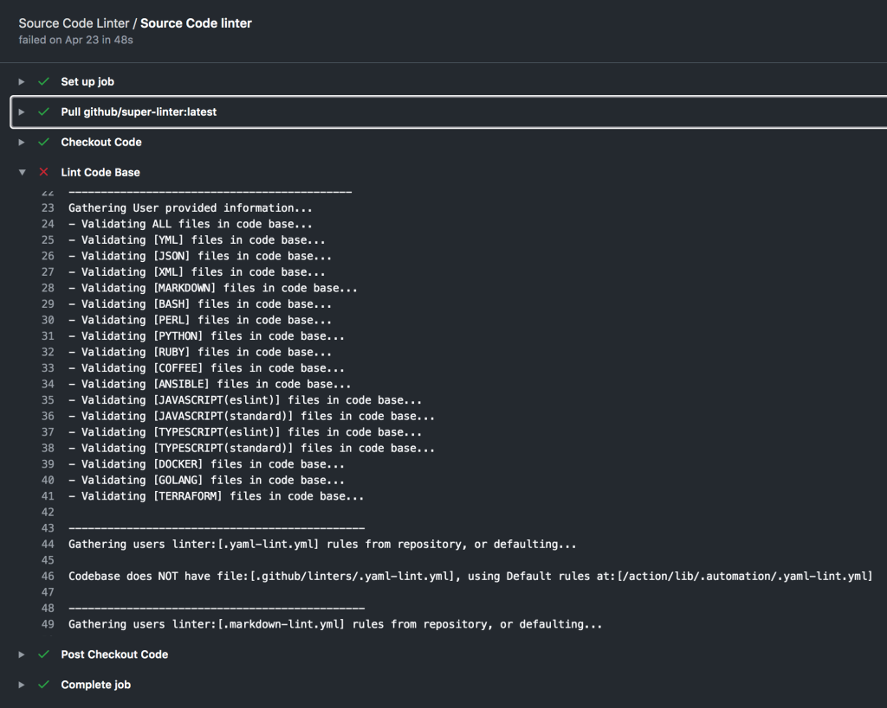
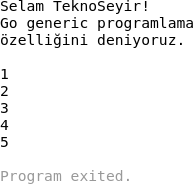
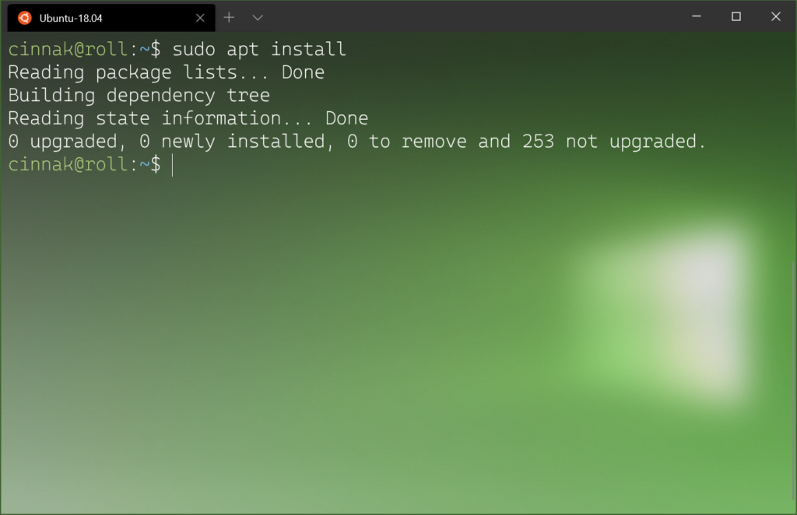
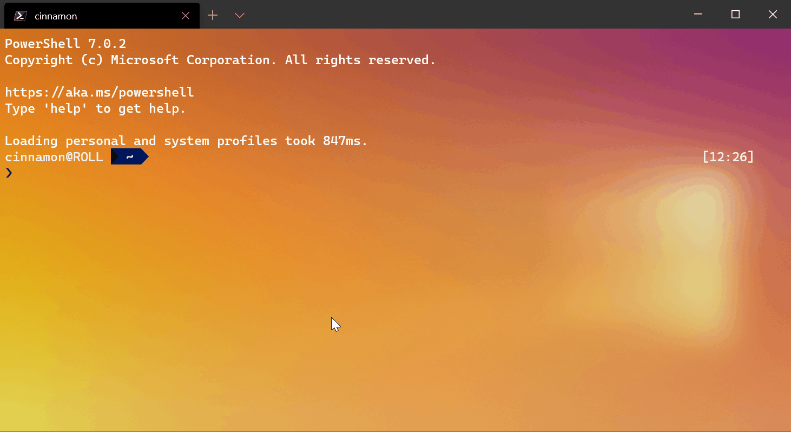
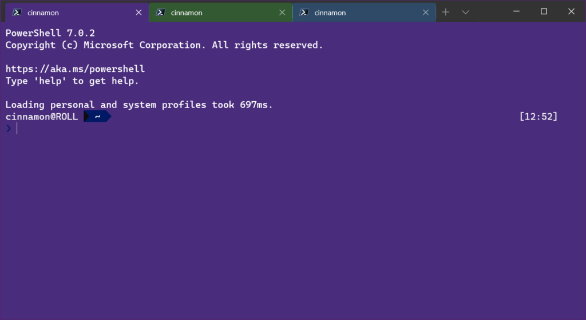
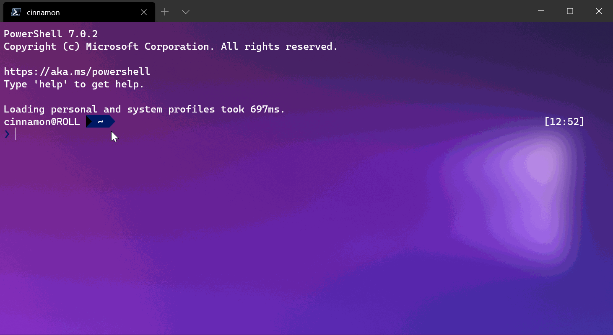

Yazılım Gündemi - 2020/24
15-21 Haziran 2020
İçindekiler
- 1. GitHub varsayılan branch ismini "main" olarak değiştirecek
- 2. GitHub Super Linter tanıtıldı
- 3. Go dili topluluğu generic programlama özelliği için yeni bir öneri yayınladı: Type Parameters
- 4. Chromium takımının 2020 yılı tarayıcı uyumluluğu çalışmaları
- 5. Google, geliştiricilere uygulamayı yüklemeden abonelik satma imkanı sağlayacak
- 6. Bootstrap 5 Alpha yayınlandı
- 7. Windows Terminal Preview 1.1 sürümü yayınlandı
- 8. Yaklaşan Online Etkinlikler
- 9. Diğer Haberler
- 10. Lisans

< Önceki Gündem | 15-21 Haziran 2020 | Sonraki Gündem >
1 GitHub varsayılan branch ismini "main" olarak değiştirecek
Yaklaşık bir ay kadar önce ABD'de bir polisin siyahi bir vatandaşın ölümüne yol açmasının ardından ortaya çıkan "Black Lives Matter" protestoları ucundan kıyısından yazılım sektörünü de etkilemeye başlamıştı. Geçtiğimiz haftalarda Google'ın Go projesi içerisindeki "master/slave" ve "blacklist/whitelist" gibi ifadeleri kaldırığını haberleştirmiştim (bkz: Yazılım Gündemi - 2020/22). Bu hafta ise GitHub'ın benzer bir değişikliğe gideceğinin haberi aldık.
Hepimizin bildiği ve neredeyse her gün kullandığımız git versiyon kontrol sisteminin varsayılan branch ismi olan "master" artık "main" olarak değiştiriliyor. Bu dal ismini zaten kendimiz de değiştirebiliyorduk ama artık GitHub'da oluşturduğunuz depoların varsayılan dal ismi "main" şeklinde gelecek. Bunun nedeni olarak ise "master/slave" terminolojisi gösterilmiş. Açıkcası bana bu neden biraz saçma geldi çünkü git versiyonlama sisteminde "master/slave" ikilisi yok; sadece "master" terimi var o da ırkçı bir anlama gelemeyecek kadar genel bir kullanım haline gelmiş durumda. Bu değişikliği saçma bulan bir geliştirici de GitHub'ın bunu uygulamaması için Change üzerinde bir imza kampanyası başlatmış.
Aynı ve benzer değişikliklerin farklı projelerde (Örnek: openssl) ve araçlarda da yapılması gerektiğine yönelik birçok tartışma sektör içerisindeki çeşitli platformlarda dönüyor. "blacklist/whitelist" ikilisinin "blocklist/allowlist" olarak değiştirilmesini anlayabiliyorum; aynı şekilde "master/slave" ikilisini kullanan projelerin de değiştirmesini anlıyorum ama sadece "master" ifadesini kullanan GitHub'ın böyle bir değişikliğe neden gittiğini anlayamıyorum. Sanırım "Ya herkes Black Lives Matter ile ilgili PR çalışması yapıyor, biz de böyle bi' şey yapalım, geri kalmayalım" diye düşünmüş olabilirler. Açıkcası ben bu tarz yüzeysel şeyleri konuyu farklı noktaya çekme çabası olarak görüyorum. Çünkü ırkçılık sorununun asıl kökenini bulma amacından uzaklaştıran bir davranış. O zaman "üniversitede master yapmak" ifadesi ya da ses terminolojisindeki "master" ifadesi de değiştirilsin yani (!).
Bu konuda siz ne düşünüyorsunuz? Yorumlar bölümünde konulaşım.
2 GitHub Super Linter tanıtıldı
Programlama yaparken özellikle de takım halinde çalışırken kodlarda belirli bir standardı oturtmak önceden zaman alıcı olabiliyordu. Her ne kadar günümüzde linter araçları imdadımıza yetişse de onların da konfigürasyonu ile uğraşmak yine süreci uzatıyor. Özellikle de birden çok programlama dilinin kullanıldığı projelerde haliyle birden çok linter aracı kullanmak gerekiyor. İşte bu ve benzeri duruma çözüm getirmek için GitHub'da, geçtiğimiz hafta içerisinde GitHub Super Linter isimli açık kaynak projesini tanıttı. GitHub Action üzerinden çalıştırabilen bir linter aracı.
GitHub Super Linter, aslında isminden de anlaşılacağı gibi birden çok linter
aracını tek çatı altında toplayan, bunları çalıştıran ve sonuçlarını
raporlayan ve GitHub Action ile projenize kolay bir şekilde dahil
edebileceğiniz bir araç. Python, Ruby, JavaScript/TypeScript ve Go gibi
popüler programlama dillerinin yanında JSON, YAML, DockerFile ve CSS gibi
dosya formatlarını da destekliyor. Yalnız PHP için phpcs aracı ile bir
destek sunmamışlar. Belki bunu ben ekleyip pull request gönderebilirim.
Bakacağım buna.

Şekil 2: Birçok programlama dili ve dosya formatı için linter çalıştırabiliyor
GitHub Super Linter'in sağladığı bazı kolaylıklar ise şu şekilde:
mastervb. dallara çalışmayan kodların eklenmesini önleme- Birden çok programlama dili ile çalışırken kolayca kod standardı oluşturma ve tüm projede kontrolleri sağlama
- Code review süreçleri için otomatizasyon yardımı
GitHub'da depoladığınız projenize GitHub Action üzerinden çok kolay bir şekilde ekleyip, istediğiniz diller ve dosya formatları için özelleştirmesini yaparak aktifleştirebiliyorsunuz. Kullanımı ve özelleştirilmesiyle ilgili diğer konular için şu GitHub deposunun README.md dosyasına göz atabilirsiniz.
3 Go dili topluluğu generic programlama özelliği için yeni bir öneri yayınladı: Type Parameters
İlk yazılım gündemi yazılarının birinde (bkz: Yazılım Gündemi - 4) Go dili topluluğunun programlama diline generic programlama özellikleri eklemeyi tartıştığını haberleştirmiştim. Geçtiğimiz hafta ise uzun bir aradan sonra bu konuda ilk kez bir gelişme oldu ve Go takımı yeni bir öneriyi ("proposal") tasarım taslağı olarak yayınladı. Dolayısıyla bunun henüz dile eklenmiş yeni bir özellik ("feature") olmadığını ve üzerinde çeşitli değişikliklerin devam edeceğini söylemekte fayda var.
Bu generic programlama özelliği için daha önce yayınlanan proposal'da
duyurulan Contracts yapısı artık terk edilmiş gözüküyor. Onun yerine gelen
tasarımsal değişiklik ise Type Parameters özelliği oldu. Kısaca bir örnek
yapmak gerekirse:
func Print(type T)(s []T) { for _, v := range s { fmt.Println(v) } }
Yukarıda tanımladığımız fonksiyon kısaca herhangi bir türden diziyi alıp,
içerisindeki elemanları her biri bir satır olacak şekilde yazdırıyor. Yani
artık int dizisi için ayrı, string dizisi için ayrı fonksiyon yazmaya
gerek kalmıyor. Yukarıdaki fonksiyonun kullanımı ise şu şekilde:
Print([]string{"Selam TeknoSeyir!", "Go generic programlama", "özelliğini deniyoruz.\n"}) Print([]int{1, 2, 3, 4, 5})

Şekil 3: Siz de bu özelliği test etmek isterseniz Go takımı tarafından hazırlanmış şu Playground sayfasını kullanabilirsiniz: https://go2goplay.golang.org/
Go takımı ve topluluğu özellik hakkında geri bildirimler toplamaya ve taslağı geliştirmeye devam edecekler. Eğer bir aksilik olmazsa bu özelliği Ağustos 2021'de yayınlanması beklenen Go 1.17 sürümüyle birlikte stabil olarak kullanabileceğiz.
Takım tarafından sunulan proposal sayfası acayip detaylı ve uzun bir sayfa, benim de hepsini okumaya vaktim olmadığı için şimdilik bu kadar bilgi verebiliyorum ama tabii ki dilerseniz detaylı bilgi ve kullanım örnekleri için konu başlığına eklediğim bağlantılara tıklayabilirsiniz.
4 Chromium takımının 2020 yılı tarayıcı uyumluluğu çalışmaları
2019 yılında yayınlanan MDN Developer Needs Assessment anketi sonuçlarından sonra görüldü ki eskisi kadar olmasa da hâlâ daha web geliştiricilerin en önemli sorunlarından birisi tarayıcılar arasındaki uyumsuzluk sorunları. Bu bağlamda geçtiğimiz hafta içerisinde de Chromium takımı bir blog yazısı yazarak 2020 yılı boyunca üzerinde çalışacakları uyumsuzluk sorunlarından ve yaptıkları şeylerden bahsettiler.
Mart ayındaki bir yazılım gündemi yazısında (bkz: Yazılım Gündemi - 2020/13) form elemanlarının stillerinin yenilendiğinden bahsetmiştim. Dolayısıyla bu yazıya onu tekrar dahil etmiyorum. Sadece şöyle bir ekleme yapayım: Form elemanlarının stillerinin güncellenmesine devam edilecekmiş. Bunun dışında diğer konular ise şu şekilde:
- Flexbox ile ilgili uyumsuzluk sorunlarının üzerinde yoğun bir şekilde çalışılıyormuş.
- Flexbox ve CSS Grid özellikleri, takımın üzerinde çalıştığı yeni LayoutNG arayüz motoru ile yenilenecekmiş.
- Scroll olayı ile ilgili de yeni uyumluluk çözümleri düşünülüyormuş fakat tıkanılan, çözülmesi gereken bazı sorunlar varmış.
Çalışmalar ile ilgili daha detaylı bilgiler için konu başlığına eklediğim bağlantıya tıklayabilirsiniz.
5 Google, geliştiricilere uygulamayı yüklemeden abonelik satma imkanı sağlayacak
Google'ın kendi Android işletim sistemiyle birlikte dağıttığı Play Store mağaza uygulaması üzerinde artık kullanıcılar uygulamayı indirmeden de Google üzerinden ilgili uygulamanın aboneliğini satın alabilecek. Geçtiğimiz hafta Android 11'in yayınlanmasıyla birlikte sessizce duyurulan yeni Google Play Billing kütüphanesinin versiyon 3 sürümü buna izin veriyor.
Şimdilik sadece belirli birkaç geliştirici ve firmaya test olarak sunulmuş bu özellik ile birlikte uygulamanın market sayfasında "Yükle" butonunun yanına yeni bir "Abone ol ve yükle" butonu geliyor. Eğer uygulama birkaç günlük ücretsiz bir teklif sunuyorsa "Free trials & Install" yazabiliyor.
Şekil 4: Arayan ve SMS engelleme uygulaması Truecaller bu özelliği test edebilen uygulamalardan birisi.
Böylece artık kullanıcılarımız uygulamayı indirmeden de uygulama içerisinde satılan uygulama-içi satın almalar hakkında bilgi alabiliyor ve dilerse Play Store üzerinden bu işlemini gerçekleştirebiliyor olacak.
Diğer detaylar için konu başlığına eklediğim haber bağlantısına ya da Google'ın yayınladığı blog yazısına bakabilirsiniz.
6 Bootstrap 5 Alpha yayınlandı
Birçok back-end geliştiricinin kolayca uygulama çıkarabilmesini sağlamış ve bu alandaki diğer arayüz framework'lerine de yol göstermiş olan Bootstrap v5 Alpha sürümü geçtiğimiz hafta içerisinde duyuruldu.
Bu sürümle birlikte artık jQuery terk edilmiş ve eski Internet Explorer sürümleri için de destekler sonlanmış gözüküyor. Artık Bootstrap kullanırken yanında bedava ve ekstra olarak gelen jQuery bağımlılığı yok. Yine de jQuery'ye katkılarından dolayı teşekkür etmek gerek.
Internet Explorer desteğinin sonlandırılmasının bir getirisi olarak artık Bootstrap 5 ile birlikte CSS üzerinde "Custom Properties" özelliğine sahip olduk. Bu sayede artık CSS kodunun herhangi bir yerinde kullanabilmek üzere değişkenler tanımlayabileceğiz. Örnek vermek gerekirse:
:root { --teknoseyir-kirmizisi: #ab1500; --beyaz: #fff; } .tekno { background-color: var(--beyaz); color: var(--teknoseyir-kirmizisi); /* */ }
Artık bu yapıyı Bootstrap kendisi de elemanlarında kullanıyor.
Tabii ki bu sürümün Alpha etiketiyle yayınlandığını hatırlatmakta fayda var. Yani henüz geçiş yapmak için çok erken. Yine de diğer detayları merak ediyorsanız konu başlığına eklediğim bağlantıya tıklayabilirsiniz.
7 Windows Terminal Preview 1.1 sürümü yayınlandı
Microsoft, geliştiricileri Windows ekosistemine çekmek için hamlelerine devam ediyor. Geçtiğimiz hafta yayınlanan Windows Terminal Preview 1.1 sürümüyle birlikte gelen özelliklerin bazıları şu şekilde:

Şekil 5: Artık "fontWeight": "normal" gibi bir ifadeyi ayar dosyanıza ekleyerek terminal ekranındaki fontun kalınlığını ayarlabileceğiz. Tüm opsiyonlar için buraya bakabilirsiniz.
Artık Alt+Tıklama kombinasyonunu aşağıdaki gibi kullanarak terminal
ekranımızı çoklu panellere bölebileceğiz.

Bu sürümle birlikte Windows Terminal'in sekme özellikleri de gelişmiş durumda. Artık sekmelerin isimleri değiştirebileceğiz ve onlara özel renkler atayabileceğiz.

Şekil 7: Sekmenin rengini değiştirmek için sağ tıklayıp, "Color…" seçeneğine gelmek gerekiyor.

Şekil 8: Sekmenin ismini değiştirmek için sağ tıklayıp "Rename Tab" demek gerekiyor. Sekme isimlerinde Emoji de kullanılabiliyor :)
Bunlara ek olarak artık komut satırını kullanarak yeni bir Windows Terminal
penceresi oluştururken iki yeni opsiyonumuz da var. İlki --maximized ya da
-M ile yeni pencereyi ekranı kaplayacak şekilde oluşturabiliyoruz; ikincisi
ise --fullscreen ya da -F ile yeni pencereyi tam ekran modunda
oluşturabiliyoruz. Ayrıca siz de benim gibi "Terminal benim yaşam ortamım
birçok şeyi orada yaparım" diyenlerdenseniz Windows 10'un açılışıyla birlikte
bir Windows Terminal penceresi açılsın istiyorsanız ayar dosyanıza aşağıdaki
satırı ekleyebilirsiniz:
"startOnUserLogin": true
Her ne kadar GNU/Linux tarafına çoktan geçmiş bir geliştirici olsam da bu gelişmelere Windows üzerinde çalışmak zorunda olan arkadaşlar için seviniyorum. Mutlaka bir ara ben de deneyeceğim. Bakalım Microsoft ilerleyen sürümlerde başka ne gibi özellikler gelecek.
8 Yaklaşan Online Etkinlikler
9 Diğer Haberler
- Almanya kendi koronavirüs takip uygulamasını açık kaynak yaptı.
- Microsoft, Windows Subsystem for Linux'a NVDIA CUDA desteği ekledi.
- Google Cloud, yeni bir depolama seçeneğini duyurdu: Filestore High Scale.
- Araştırmacılar Kuantum bilgisayarlar için ilk programlama dilini geliştirdiler: Silq.
- OpenAI organizasyonu yeni çalışmasını duyurdu: Image GPT.
- .NET için gRPC-Web yayınlandı. GitHub Deposu
- AdoptOpenJDK projesi Eclipse Foundation'a katıldı.
- Eclipse IDE 2020-06 (v4.16) sürümü yayınlandı.
- Free Pascal 3.2.0 sürümü yayınlandı.
- Apache Spark 3.0.0 sürümü yayınlandı.
- TiDB 4.0 GA sürümü yayınlandı.
- OpenAPI 3.1.0 sürümü yayınlandı.
- RestClient.Net 4.0 sürümü yayınlandı.
10 Lisans

Yazılım Gündemi - 2020/24 yazısı Eren Hatırnaz tarafından Creative Commons Atıf-GayriTicari-AynıLisanslaPaylaş 4.0 Uluslararası Lisansı (CC BY-NC-SA 4.0) ile lisanslanmıştır.